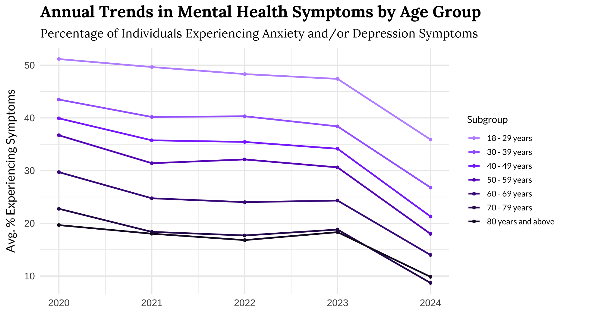

Age-Based Mental Health Trends During the COVID-19 Pandemic

-
Young Americans (18-29 years): This group consistently shows the highest rates of mental health symptoms, aligning with findings by Hawes et al. (2022), who studied depressive symptoms in adolescents before and during the pandemic. Key stressors included home confinement, schoolwork, fear of contracting COVID-19, and meeting basic needs.
-
Middle Age Groups (30-59 years): These age groups experienced fluctuations but generally lower rates compared to younger adults.
-
Older Adults (60 years and above): Older age groups reported the lowest rates of mental health symptoms, indicating better resilience or different stressors compared to younger populations.
➔
➔